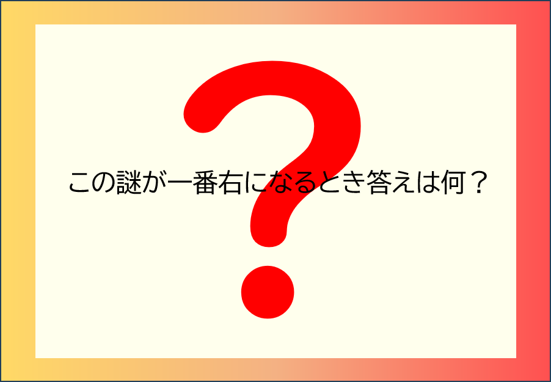

謎解き判定ページ
小なぞの答えを入力
小なぞの答えを確認できます。
最後のなぞを確認して答えを入力

ヒント
ヒント:①
なぞの枠の色がつながるように、順番にならべて今までの答えをかきだしてみよう
ヒント:②
「ありくつみきみつ？」の順番になるはずだ。続いて並べた時の色がどのようなグラデーションになっているかを考えよう。
ヒント:③
グラデーションは赤・橙・緑・青・紫・青・緑・橙・赤となっている。
答え
答え全部で回文になっている。グラデーションが途中で反転しているのは回文を示唆しているため。回文にするために「ありくつみきみつ？」に入るものは「くりあ」